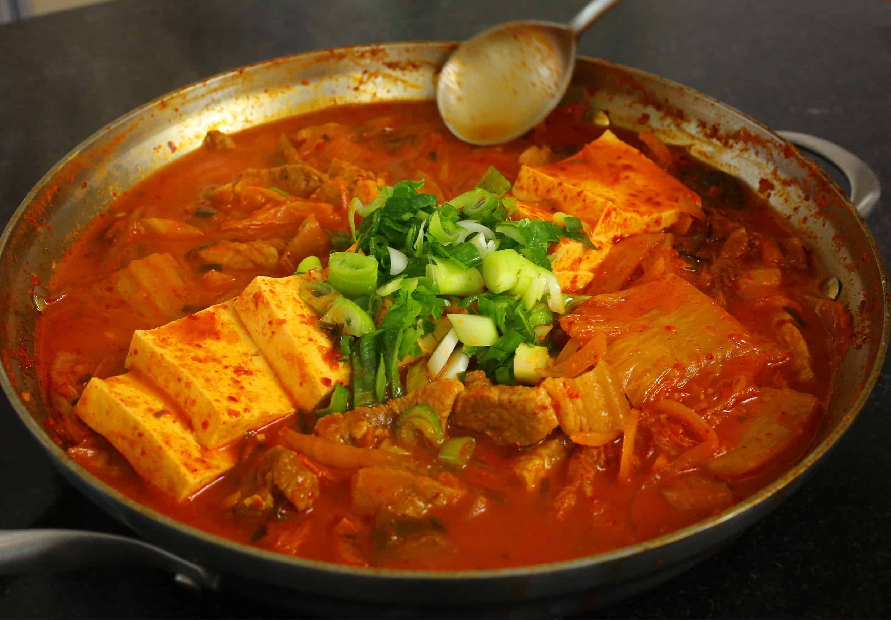

Home
Kimchi Jjigae

Description
Kimchi stew. Use preferred ingredients and proportions.
Ingredients
- pork product
- onion
- kimchi with brine
- garlic
- gochugaru
- gochujang
- sugar
- daikon radish, cubed
- enoki mushroom
- dashi
- tofu
Steps
- In a pot, fry off pork product.
- Add onion to pork fat and cook until translucent.
- Add in the rest of the ingredients except for the tofu, making sure there is enough broth. Cover and let simmer until radish is softened and flavours have combined.
- Add the tofu and steam until tofu is warmed.
- Serve over rice, top with green onions.